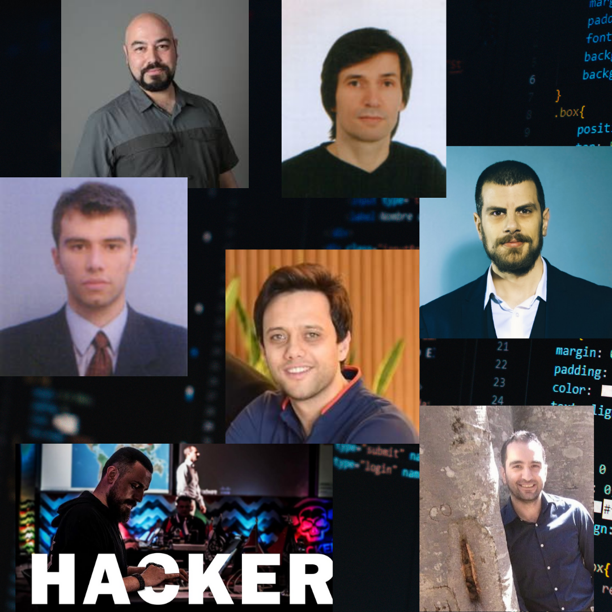
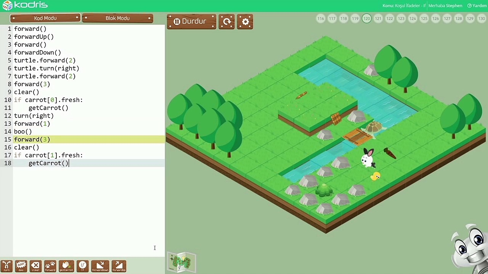
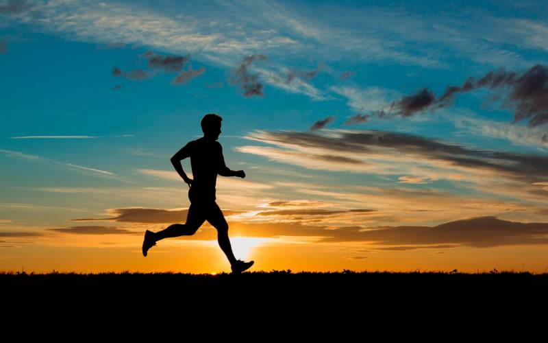
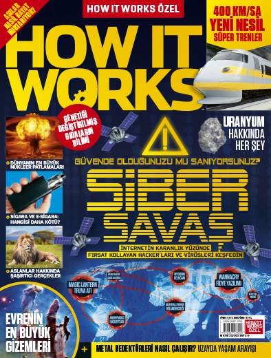
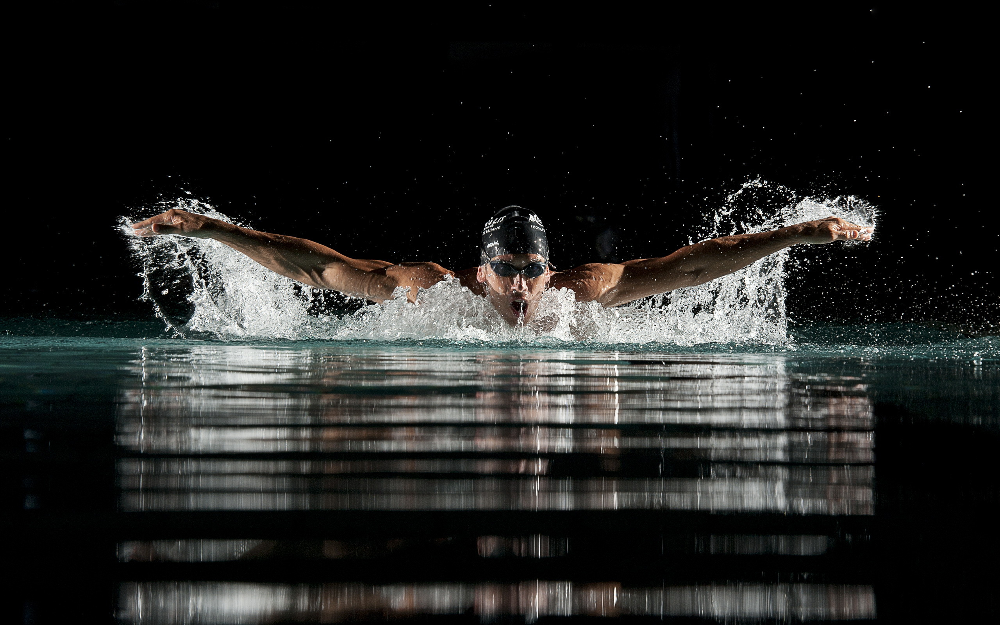

Aziz Şimşek
Günlük olarak yürüyüş yapan,ingilizcesini geliştirmeye çalışan ,uyanış ve yatış saatlerini kontrol altına almaya çalışan ,7 kişilik bir ailenin en küçük üyesiyim.
Arkadaşlarımdan bahsedecek olursam çok fazla arkadaşım yoktur bunun sebebi ise inandıgım presibimden (Yıldızlar kadar arkadaşın olacağına, Alaca karanlıkta parlayan ay gibi tek dostun olsun yeter. Goethe)
ve önceki yaşalarımdan insanların beni üzmesinden kaynaklanır.Yaşamımım şimdiki bölünde ise yazılım sektörü içinde yenilikleri ögrenmeyi seven ve onu merak eden bir yapım var.
Teknoloji ile ilgili konuları dinlemeyi takip etmeyi ise çok severim.
Ben ve Bilgisayar
İçimdeki yazılımcını aşagıda gördüğünüz çoçuklar için olan yazılım oyununu keşfetmem sonuçu ortaya çıktı.Önçeki Süreçlerde bu karara varmam o kadar da kolay olmadı
lise eğitimim bittikten sonra İstanbul Teknik Üniversitesi Geomatik Mühendisliği bölümüne yerleştim okulumu sevmeme ragmen bölüme bir türlü ısınamadım ve orada 1 yıllık bir süreçten sonra
Sadi Evren Şeker-Kayhan Ayar-Cemil Öz-Mustafa Vahit Keskin
Atil Samancioglu-Can Yüzkollar-Mehmet Dursun İnce
Bu paylaştıgım isimler ise benim yazılımla tanışmamı saglayan ve bu sektörede ilerlemede yardımcı olan kıymetli hocalarımdır.


İçimdeki yazılımcını aşagıda gördüğünüz çoçuklar için olan yazılım oyununu keşfetmem sonuçu ortaya çıktı.Önçeki Süreçlerde bu karara varmam o kadar da kolay olmadı
lise eğitimim bittikten sonra İstanbul Teknik Üniversitesi Geomatik Mühendisliği bölümüne yerleştim okulumu sevmeme ragmen bölüme bir türlü ısınamadım ve orada 1 yıllık bir süreçten sonra Sakarya
Üniversitesi Bilgisayar Mühendisliğine geçiş yaptım .
Kodrisin Eğitim Satın almadan önce müşterilerine sunduğu demo kodlama sayfasından bir kısım.
Bisiklete sürmeye küçüklükten beri ilgim vardır. Hem gezmeyi hem de yeni yerler görmeyi severim.
Küçüklüğümde bisiklete genelede mahallemde sürerdim. Fakat bazı zamanlarda vardır, diğerleriden farklı ve özel bişeyler hissettirdiğini hemen anlarsınız bu zamaanlarım
bisikletimle birlikte evimden uzaklaştıgım vakitlerdi.O zamanlar evden uzaklaştıgımda yeni yeni gördüğüm yerler beni heyecanlandırırd bunun sebebi ise evdekilerden habersiz yapışım oluyordu.
İlk Kullandıgım ve halen bianchi marka mavi bisikletimi çok severim.

Yürüyüş Yapmak
Yürüyüş yapmak benim favori aktivitelerimden biridir.Sebeplerine geleçek olursak yapılabilecek en kolay sporlardan biri.
Sprolar arasında en ucuz olanı ,istedigin zaman yapabilecegin bir spor ,hem her yerde bu sporu yapabiliyoum.Tüm bunlarla birlikte güzel olan şeyse alzehimer önlüyor
.Ayrıca diger sporlar gibi yorucu degil .Bu faaliyetimi ise günlük Olaral yapmaya çalışıyorum ve bunu yapmaktan mutluyum.

Dergi Okumak
Dergi okumaya İstanbul Teknik Üniversitesi'de başladım ve bir sorun olmadıkça her ay kendime Populer Science ve How it works dergisini alırım.
İlk okumaya başladıgım dergi ise Chip dergisi idi .Ama populer science dergisini son zamanlarda bıraktım onu okumaktan zevk alamamaya başladım.
Chip dergisini ise içindeki bilgilerin çok yüzeysel oluşundan ve içinin reklamla dolu olmasından dolayı bıraktım.

Yüzmek
Yüzmeyi ilk ailemle gittigim ılıca beldesindeki bir tesisite ögrenmeye çalıştım fakat orada başarısız oldum.Sonra zorda olsa İstanbul Teknik Üniversitesi'de
başladım ve orada youtube üzerinde serkan özkeskin hocanın videolarını izleyip havuzda bir arkadaşımında vesilesi ile uygulaya uygulaya ögrendim
ilk zamanlarda ayaklarımı bilincsizce yüzdügüm için çok zorlayıp kramplar girmesine neden oldum.Yüzme sporunu fırsat buldukça yapmaya devam edecegim.
Siber Güvenlik
Siber Güvenlik hakkında çok fazla şey anlatamayaçagım çünkü yeni başladıgım bir alan ve merak ettigim bir alan oldu benim için halende öyle olmaya devam ediyor .
Siber güvenlik alanını önce Atıl Samancıoglu sonra Mehmet Dursun hoca ve Can deger ile tanıdım .Site içinde farkettiginiz üzere Mr.Robot dizisi ise bu yazılım ve siber güvenlik
öğrenme sürecimde izlemekten zevk aldıgım bir dizi serisi sizde meraklı iseniz bu konulara tavsiye ederim.
Bunlarda Dinlemeyi Sevdigim Müzikler ve Sevdigim Videolardan Birkaçı
Müzikler konusunda çok seçici degilimdir ama yeni müzikleri dinlemeyi pek sevmiyorum bana çok anlamsız geliyorlar,diğer videolar ise benim
üzerimde düşünmeme ve hayatımı yön veren bir etkisi oldugu için paylaştım.
Michael Jackson-Smooth Criminal parcası pek kez dinledigim şarkıdır.
The Weeknd - Blinding Lights şarkısı melodisinin haraketliliğini çok severim.
Stromae - Alors On Danse ise bu şarkı ile ben küçükken dinledigim ve halen dinlerken zevk aldıgım şarkılardan biri bu şarkı ile FİAT markasının reklamında ilk kez dinlemiştim.
Ken Robinson diyor ki; "Okullar yaratıcılığı öldürüyor." Bu Ted konuşmasının bende yeri ayrı.Çünkü okul hayatımla ilgili kararlar alırken bana çok yardımcı olmuştu.
Barış Özcan- DOKUZUNCU ve SONUNCU yaşamımdaki davranışlarım için bana anlam vermemde yardımcı olan videolardan biridir.
Barış Özcan- TRAMVAY PROBLEMİ - Siz olsanız ne yapardınız? adlı video ise bana gelişen teknolojik durumların üzerindeki etik durumlar hakkında
bana farklı yönlerde düşünmemi saglayan bir videodur.
Hikmet Anıl Öztekin-Minimalist Olmanın Faydaları adlı videosu ise benim ekonomik yaşantım da ürün alım satımlarım için yeni bir bilinç ve farkındalık oluşturdu bende.
Prof.Dr.Öğür Demirtaş- Para Biriktiren Adam adlı video ise para biriktirme konusunda daha farklı düşünmemi saglayan ve sonrasında daha başka
ekonomi videoları ile ekonomi hayatımda yenilikler getirdi.